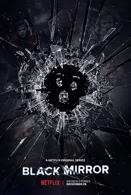

8.5
黑镜 第四季
Black Mirror Season 4
2017
美国
评分 8.5
导演:
托比·海恩斯 / 朱迪·福斯特 / 约翰·希尔寇特 / 蒂莫西·范·帕腾 / 大卫·斯雷德
演员:
杰西·普莱蒙 / 克里斯汀·米利欧缇 / 吉米·辛普森 / 比利·马格努森 / 米凯拉·科尔
类型:
剧情,惊悚,科幻
剧情简介
本季的六个故事像六面反光的黑色镜片，折射出科技在极端情境下所激发的人性深渊。每一集都独立成章，却在隐秘处彼此呼应，以不同角度审视权力、控制、记忆与失序的未来。《卡里斯特号》以科幻冒险的外壳开启整季。游戏公司技术总监表面温吞寡言，但在自家改造的虚拟宇宙里，他把憋屈的愤怒化作神一般的暴政。办公室里的一句冷语、一个轻蔑眼神，都会在虚拟空间转化为冰冷惩罚。光洁的飞船舱内隐藏着诡异的沉默，角色们在笑容下掩饰恐惧，科技与独裁之间的距离被缩到几乎不存在。《大天使》中，母亲为了守护女儿的安全，将所有视线、控制与过滤装进一个便携终端。从校园草地的追逐，到第一次面对世界的危险，一切都被投射到母亲的屏幕上。那些本应属于成长的未知，被涂抹成可控的数字化路径，当保护成为审查，亲情也在紧绷的控制中变形。《鳄鱼》将罪与惧意呈现得冷静而漠然。冰原道路上一次看似远去的往事，在未来的调查技术面前无处遁形。记忆扫描仪在白墙房间里嗡嗡作响，平凡的日常被一层层剥开。每一次删除线索的尝试，都会让黑暗更深一分，风声、雪光与人心的急促跳动交织成压抑的共鸣。《DJ下台》以更柔和的调性探讨爱情的算法化。配对系统把两人的相识、分离甚至相处期限都精确到分钟。情侣们坐在暖色灯光下分享彼此的期限，数字像一把无形的手拉扯着情绪。甜蜜与焦躁混杂，每一段关系都像一次被规定好的实验。当人类的情感被交给程序裁决，还能否找到不被系统读取的那部分心意？《铁头》则从头至尾笼罩着死亡般的冷金属感。荒野静得像被抽空，机器狗在断壁残墙间迅速穿行，银色外壳在阳光下闪着冷光。人类几乎被消灭殆尽的世界里，一个极小的目标足以让生命孤注一掷。追逐、躲藏与搏命拼杀在无声的紧张节奏中持续推进，生存像一根随时会断裂的线。《黑色博物馆》以展览形式将科技罪行逐一呈现。玻璃柜里静静陈列着看似无害的物件，每件背后却藏着撕裂人性的过往。博物馆的走廊亮着刺眼白光，空气里弥漫着冷漠的纪念意味。一位访客在导览人的娓娓讲述中逐渐步入一场关于复仇、记忆与伦理的复杂搏斗。六个故事风格各异，却都在光洁科技表面下揭示人心最柔软也最危险的角落。本季让观众看到：未来也许更便利、更高效，但人类的困境从未因此减少。